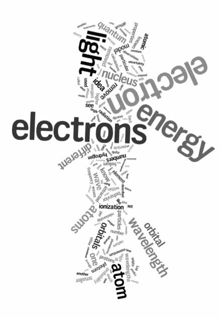
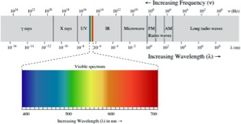

| Chapter 2: Electrons and Orbitals – knowledge statements & learning goals |
|
Troubles with the planetary model of the atom: Even as he articulated his planetary model of the atom, Rutherford was aware that there were serious problems with it. For example, since like charges repel and unlike charges attract, why don’t the multiple protons in the nuclei of elements heavier than hydrogen repel each other, and cause the nucleus to fragment? What keeps them so close to each other? On the other hand, if electrons were orbiting the nucleus like planets round the sun, why didn't they repel each other, leading to quite complex and presumably unstable "orbits"? Why weren’t they ejected spontaneously and why didn’t the electrostatic attraction between the positively-charged nucleus and the negatively-charged electrons force the negatively-charged electrons to “fall into” the positively charged nucleus. |

|
Assuming that the electrons are moving, they should speed up (increasing their kinetic energy) as they were attracted to the positively charged nucleus – that energy should be released (as light) when they collided with the nucleus. But as we know atoms are, generally, quite stable. So many questions – so few answers! Clearly, Rutherford's model was missing something important (and assuming something that cannot be true) with regard to forces within the nucleus, the orbital properties of electrons, and the attractions between electrons and protons. To understand what these are leads us into the weird world of quantum mechanics. Light and getting quantum mechanical While work on the nature of atoms was progressing there was also significant progress in our understanding of the nature of light. Historically, there had been a long controversy about the nature of light; there were two apparently mutually exclusive viewpoints, namely that light is a type of wave phenomena (like sound or water waves) traveling through a medium (like air or the surface of water) versus the position that light is composed of particles (Isaac Newton called them corpuscles). There was compelling evidence to support both, seemingly mutually exclusive points of view, and the attempt to reconcile these observations into a single model proved difficult. |
| While the wave theory explained many of the properties of light, it did not explain them all. Two types of experiments in particular gave results that did not appear to be compatible with the wave theory. The first arose during investigations by the German physicist Max Planck (1858 – 1947) of what is known as blackbody radiation. |  |
In these studies, an object is heated to a particular temperature; such heated objects emit radiation. Consider your own body, which typically has a temperature of approximately 98.6ºF or 36ºC. Your body emits infrared radiation and there are cameras that are sensitive to infrared radiation. Some animals, like snakes, have infrared detectors that enable them to locate their prey – typically small (warm-blooded, infrared light emitting) mammals. Because mammals tend to be warmer than their surroundings, infrared vision can be used to find them in the dark or when they are camouflaged. Planck had been commissioned by an electric power company to produce a light bulb that emitted the maximum amount of light using the minimum amount of energy. In the course of this project he studied how the color of the light emitted (a function of its wavelength) changed as a function of an object's (such as a light bulb filament) temperature. We can write this relationship as λ (wavelength) = f(t) where t = temperature and "f" indicates "function of". He found that current theories of light did not explain his observations, in particular as the frequency of the light ν increased – his measurements diverged more and more from the predictions of then current, wave-based theory. His result was, believe it or not, known as the "ultraviolet catastrophe". It was a catastrophe for the conventional theory because there was no obvious way to modify the theory to explain the observation (and this was important because these observations were quite reproducible.) Once again, we see an example of the rules of science, a reproducible discrepancy, even if it seems minor, must be addressed or the theory must be considered incomplete or just plain wrong. To fit the data, Planck had to invoke a rather strange and non-intuitive idea, namely that matter absorbs and emits energy only in discrete chunks, which he called quanta. These quanta occurred in multiples of E (energy) = hν, where h is a constant, now known as Planck's constant. Planck’s constant is considered one of the fundamental numbers that describes our universe. |
| Planck himself proposed the idea with great reluctance and spent a great deal of time trying to reconcile it with classical theories of light. Later in this chapter we will see how this property can be used to identify specific types of atoms, both in the laboratory and in outer space. | 2.1 Electrons & Orbitals 2.2 Quanta 2.3 Spectroscopy 2.4 Beyond Bohr 2.5 Periodic table 2.6 Orbitals plus 2.7 Quantum numbers |
Question to answer:
Questions to ponder:
Question for later:
|
| 27-Jun-2012 |